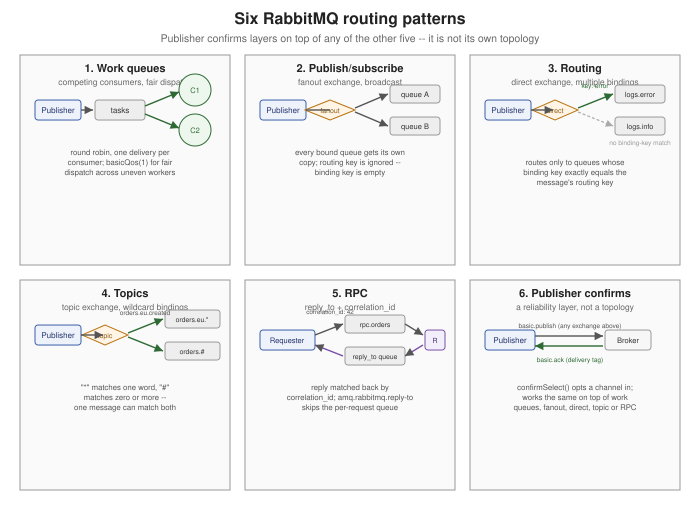

RabbitMQ Routing Patterns
|
This content was generated with the assistance of AI and should be verified against the official documentation before being relied on in production. |
RabbitMQ Architecture and the AMQP Model introduced the four exchange types and how bindings turn a routing rule into a routing table; Publishing to RabbitMQ and Consuming from RabbitMQ covered the publish and consume APIs themselves. This page sits a level above both: it catalogues the shapes those pieces combine into for real problems. RabbitMQ’s own tutorial series works through six of these shapes in order (a seventh, "Hello World!", is the single default-exchange queue already shown in Getting Started with Messaging's first example) — each is reproduced here as a named, reusable pattern with its topology and a short Java example, before moving on to four more targeted routing tools: headers-exchange routing, exchange-to-exchange bindings, alternate exchanges, and consistent-hash sharding.
The six tutorials as reusable patterns
Work queues: competing consumers, fair dispatch
Topology: one queue, one publisher, several consumers competing for the same deliveries — round robin by default, each message going to exactly one consumer. This is the pattern for distributing time-consuming tasks across a pool of workers, scaling throughput by adding more consumers rather than more queues.
Plain round robin dispatch ignores how busy each consumer actually is: a consumer that finishes quickly can sit
idle while a slower one still has several unacked deliveries queued up. Fair dispatch — basicQos(1), a
prefetch of exactly one — fixes that by never handing a consumer a second delivery until it has acknowledged the
first, so a fast consumer naturally picks up more of the work than a slow one. See
Consuming from RabbitMQ for the full prefetch/QoS mechanics this
builds on.
channel.queueDeclare("tasks", true, false, false, null);
channel.basicQos(1); // fair dispatch -- one unacked delivery per consumer at a time
DeliverCallback deliverCallback = (consumerTag, delivery) -> {
process(delivery.getBody());
channel.basicAck(delivery.getEnvelope().getDeliveryTag(), false);
};
channel.basicConsume("tasks", false, deliverCallback, consumerTag -> { });Publish/subscribe: fanout
Topology: a fanout exchange broadcasts every message to every bound queue, ignoring the routing key
entirely. Each subscriber typically declares its own exclusive, auto-delete queue and binds it with no binding
key — fanout does not use one — so every currently-connected subscriber gets its own independent copy of every
message, and a subscriber that was offline when a message was published simply misses it.
channel.exchangeDeclare("notifications", BuiltinExchangeType.FANOUT);
String queueName = channel.queueDeclare().getQueue(); // server-generated name, exclusive, auto-delete
channel.queueBind(queueName, "notifications", "");
channel.basicConsume(queueName, true, (consumerTag, delivery) ->
System.out.println("received: " + new String(delivery.getBody())), consumerTag -> { });Routing: a direct exchange with multiple bindings
Topology: a direct exchange routes to every queue whose binding key exactly equals the message’s routing
key. Several queues can each bind with a different key to receive a different slice of the traffic (severity-based
log routing is the tutorial’s own example: an error queue bound only to error, an all-logs queue bound to
info, warning and error), and a single queue can hold several bindings to receive more than one slice at
once.
channel.exchangeDeclare("logs", BuiltinExchangeType.DIRECT);
channel.queueDeclare("logs.error", true, false, false, null);
channel.queueBind("logs.error", "logs", "error");
channel.basicPublish("logs", "error", null, "disk full on node-3".getBytes());Topics
Topology: a topic exchange generalizes direct routing with a dot-separated pattern language — matches exactly one word, matches zero or more — so a single binding can match a whole family of routing
keys instead of one exact string.
RabbitMQ Architecture and the AMQP Model's own
orders.eu. / orders. example already works through this pattern in full; reach for a topic exchange whenever
routing needs are hierarchical (by region, by severity, by event type) rather than an exact, flat match.
RPC: reply_to and correlation_id
Topology: a requester publishes a request carrying a replyTo queue name and a correlationId, the responder
publishes its reply to that replyTo queue with the same correlationId copied over, and the requester — already
consuming from its own reply queue — matches the incoming reply back to the right pending request by that
correlation ID. correlationId matters because a shared reply queue serving several concurrent requests would
otherwise have no way to tell whose reply just arrived.
// responder side
DeliverCallback deliverCallback = (consumerTag, delivery) -> {
AMQP.BasicProperties replyProperties = new AMQP.BasicProperties.Builder()
.correlationId(delivery.getProperties().getCorrelationId())
.build();
byte[] response = handle(delivery.getBody());
channel.basicPublish("", delivery.getProperties().getReplyTo(), replyProperties, response);
channel.basicAck(delivery.getEnvelope().getDeliveryTag(), false);
};
channel.basicConsume("rpc.orders", false, deliverCallback, consumerTag -> { });A per-request exclusive reply queue declared with channel.queueDeclare() is the straightforward way to receive
that reply, but it is not the only one: RabbitMQ’s built-in direct reply-to pseudo-queue
(amq.rabbitmq.reply-to) skips the per-request queue declaration and teardown entirely, at the cost of durability — covered in full, with a complete requester-side example, on
Consuming from RabbitMQ's direct reply-to section.
Publisher confirms
Topology: not a routing shape at all, but the reliability layer every pattern above can opt into on top of
whichever exchange it uses — the publisher enables confirms once per channel (channel.confirmSelect()) and the
broker acknowledges each publish once it has actually been handled, correlated back by a strictly increasing
delivery tag. Publishing to RabbitMQ covers the three confirm
strategies (individual, batched, asynchronous) and a complete confirmed-publishing example in full; it belongs in
this list because RabbitMQ’s own tutorial series presents it as the seventh and final pattern, layered on top of
whichever topology (work queue, fanout, direct, topic, or RPC) a given publisher is using.
Headers-exchange routing
A headers exchange ignores the routing key completely and matches the message’s headers table against each
binding’s own argument table instead, with the binding’s x-match argument choosing any (at least one header
pair must match) or all (every header pair must match). It suits routing decisions that are naturally
multi-dimensional — format, region, and priority all mattering at once — where encoding every combination into a
dotted routing key would get unwieldy fast.
channel.exchangeDeclare("orders.by-attributes", BuiltinExchangeType.HEADERS);
Map<String, Object> bindingArgs = Map.of(
"x-match", "all",
"format", "json",
"region", "eu");
channel.queueDeclare("orders.eu.json", true, false, false, null);
channel.queueBind("orders.eu.json", "orders.by-attributes", "", bindingArgs);
AMQP.BasicProperties properties = new AMQP.BasicProperties.Builder()
.headers(Map.of("format", "json", "region", "eu"))
.build();
channel.basicPublish("orders.by-attributes", "", properties, "{\"orderId\":\"order-42\"}".getBytes());Exchange-to-exchange bindings
An exchange can be bound to another exchange the same way a queue is — a RabbitMQ-specific extension to plain AMQP 0-9-1. A message published to a source exchange with exchange-to-exchange bindings in place is routed only once, using the combined set of bindings across the source exchange and every destination exchange it feeds, rather than being independently re-evaluated exchange by exchange. It is how a single publish fans out into several independently-configured routing topologies at once — for example, feeding both an operational topic exchange and a separate audit-log fanout exchange from one publish, without the publisher needing to know the audit exchange exists.
channel.exchangeDeclare("orders", BuiltinExchangeType.TOPIC, true);
channel.exchangeDeclare("orders.audit", BuiltinExchangeType.FANOUT, true);
channel.exchangeBind("orders.audit", "orders", "#"); // every message reaching "orders" also reaches "orders.audit"Alternate exchanges
An alternate exchange is the per-exchange equivalent of the mandatory publish flag: configured once, at
declaration time, it receives (unchanged) any message the primary exchange could not route to a single queue,
typically feeding a catch-all queue used for monitoring or later replay.
Publishing to RabbitMQ already works through a complete
declaration and binding example for it, alongside how it interacts with mandatory/returned messages.
Consistent-hash sharding
The consistent-hash exchange (x-consistent-hash, a RabbitMQ plugin rather than a built-in AMQP 0-9-1 type)
hashes a message’s routing key — or a chosen header, with the right binding arguments — onto a ring, and routes
to whichever bound queue owns that section of the ring. Each binding’s key is a numeric weight: a queue bound
with weight 20 gets roughly twice the share of traffic a queue bound with weight 10 does, which is what lets
a workload be sharded unevenly on purpose (a bigger consumer group getting a bigger share) rather than only ever
evenly.
Map<String, Object> exchangeArguments = Map.of(); // no special arguments needed for the exchange itself
channel.exchangeDeclare("orders.sharded", "x-consistent-hash", true, false, exchangeArguments);
channel.queueDeclare("orders.shard-0", true, false, false, null);
channel.queueDeclare("orders.shard-1", true, false, false, null);
channel.queueBind("orders.shard-0", "orders.sharded", "10"); // binding key is the weight, not a routing pattern
channel.queueBind("orders.shard-1", "orders.sharded", "10"); // equal weights -- an even split across two shards
channel.basicPublish("orders.sharded", "customer-8842", null, "{\"orderId\":\"order-42\"}".getBytes());Unlike direct or topic routing, the binding key here carries no matching semantics of its own — it is purely the
weight — so the routing key actually hashed (the message’s own routing key by default, or a header if the
exchange is declared with an hash-header argument) is what determines which shard a given message lands on, not
which binding key was used to attach a queue.
